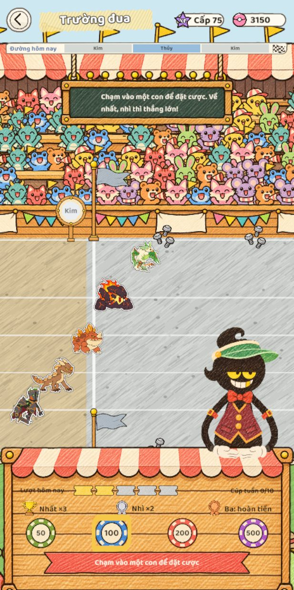
Vào màn: 5 con ở vạch, quầy cược có Lão Mực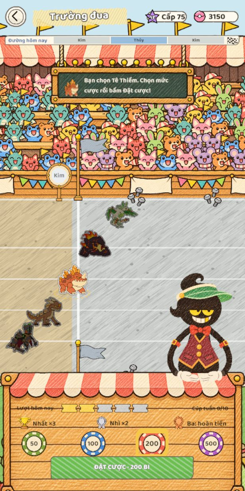
Chạm chọn một con, chọn chip, nút Đặt cược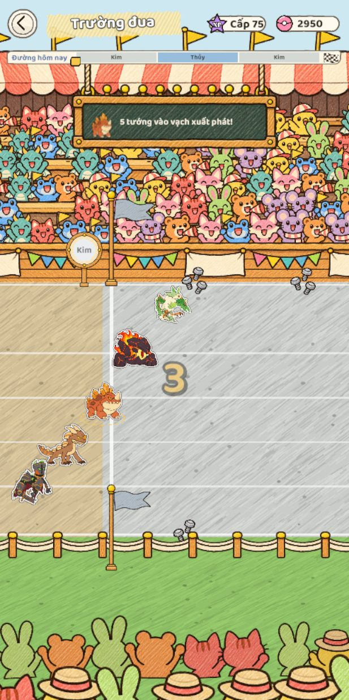
Đếm ngược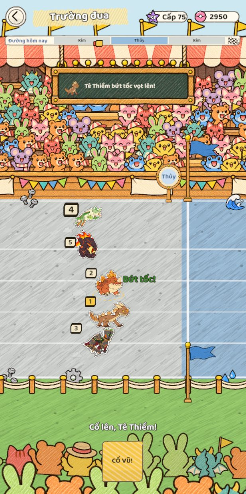
Đang đua: bám sát, bứt tốc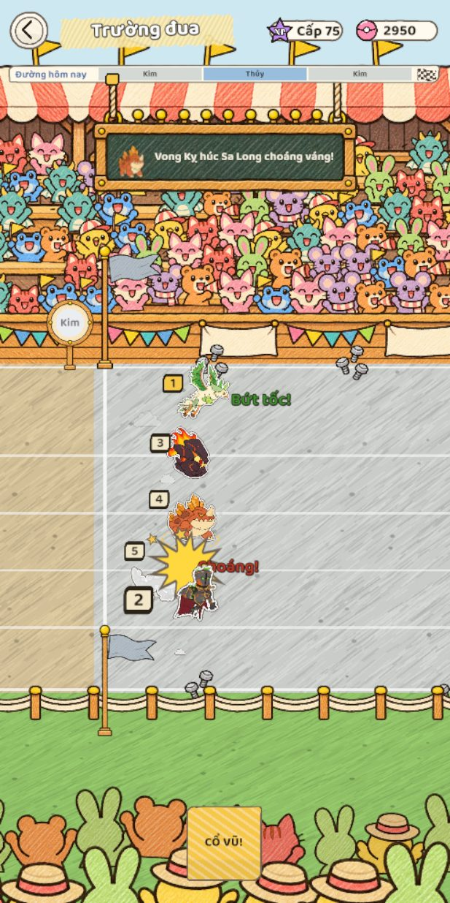
Húc nhau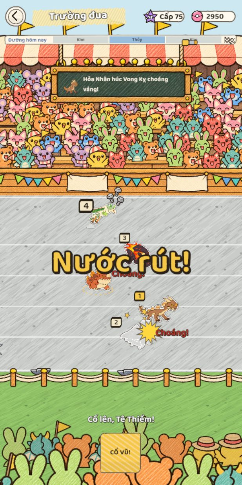
Nước rút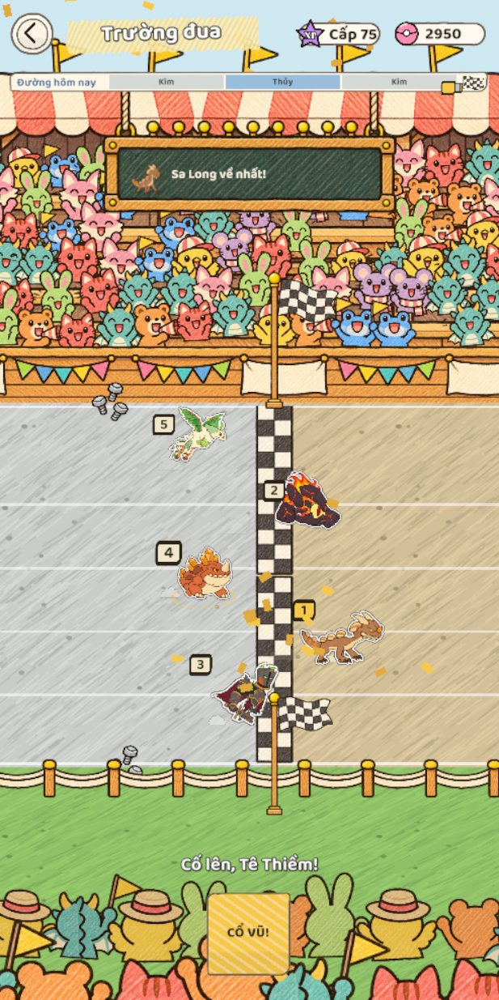
Về đích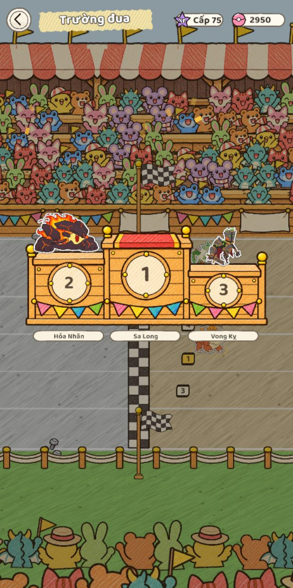
Lên bục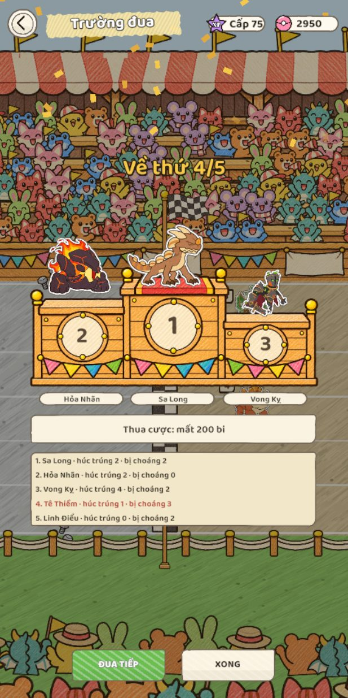
Trả thưởng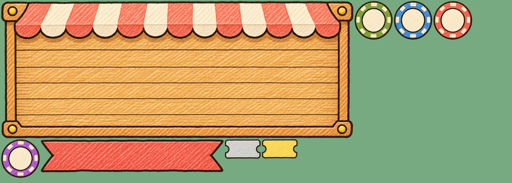
Quầy cược, chip, dải băng, vé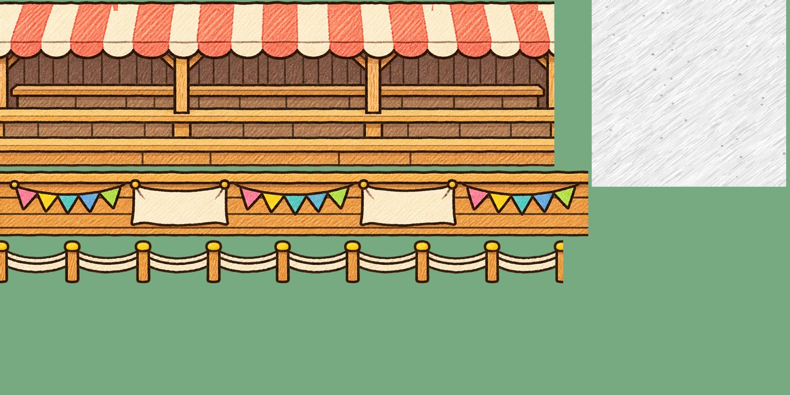
Khán đài, tường, rào, vân đất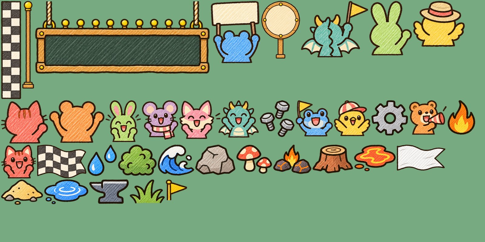
Khán giả, đồ dùng, trang trí theo hệ